スパイスカレー
昼だけ開けて、店主ひとりで一皿ずつ盛っております。
火・水・木・金曜日 11:30〜15:30（L.O. 14:00）
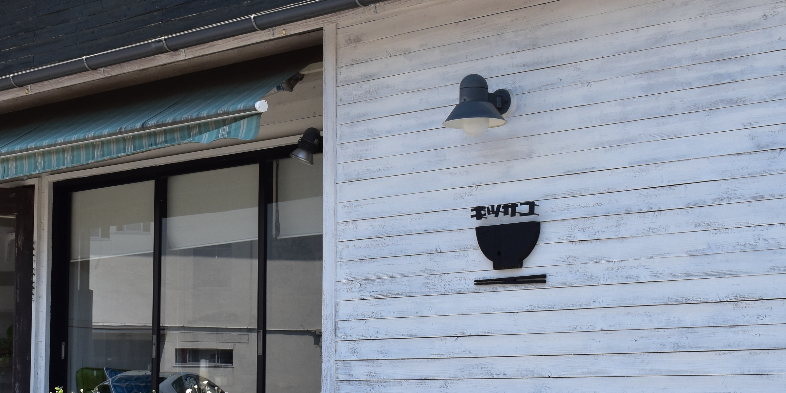
屋号は、禅の言葉「喫茶去（きっさこ）」からいただきました。まあ、お茶でも一杯、という気持ちで、お迎えしております。
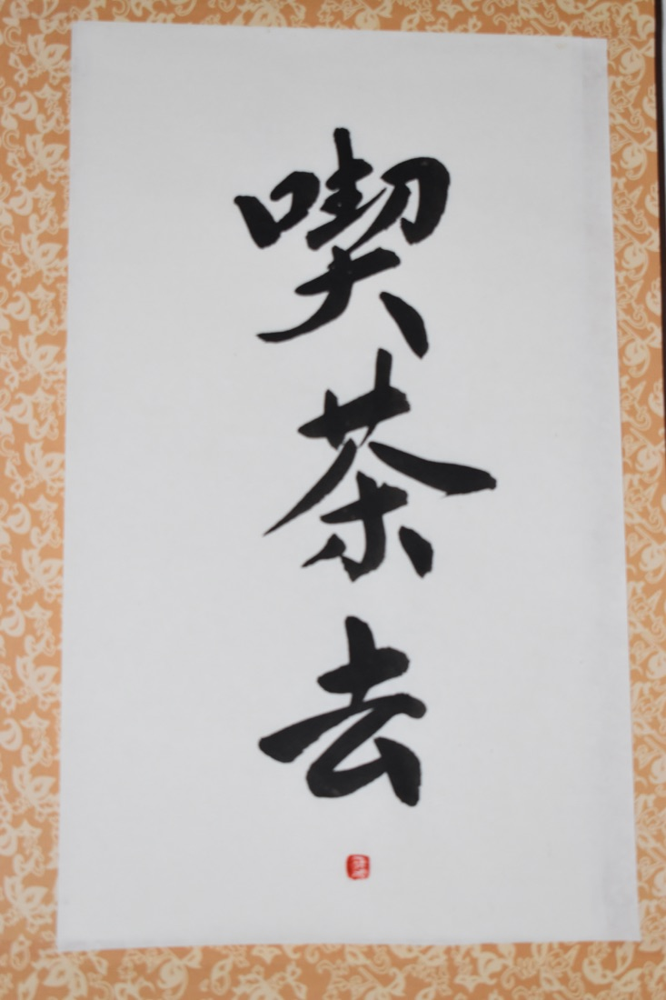
日替わりで並ぶカレー
出汁チキンカレーイカスミのスパイスカレーマーラージャン風味キーマカレーココナッツミルクのエビカレーサバのトマトカレーサグチキンポークビンダルー鯖となすのスパイスカレー手羽元のレモンカレーえびときのこのココナッツカレー黒毛和牛スネ肉のスパイスカレーめかじきとフレッシュトマトのスパイスカレーローズポークとアスパラのキーマスリランカ風チキンカレースペアリブのスパイスカレー
豆カレー
その日のカレーに、豆カレーを必ず添えてお出しします。小麦粉は使わず、スパイスの香りで仕上げております。皿の半分は、野菜の副菜です。
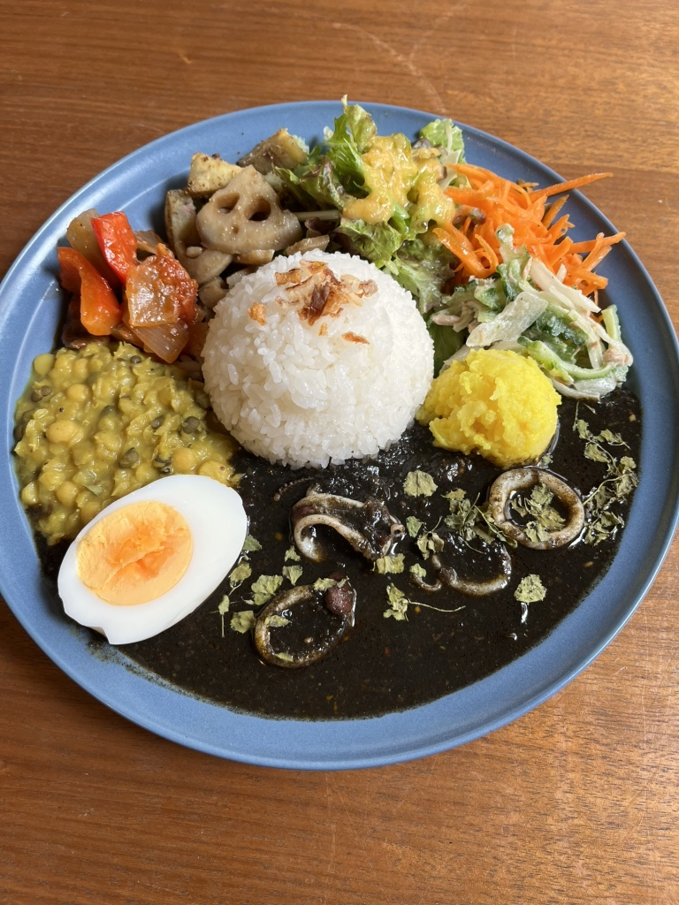
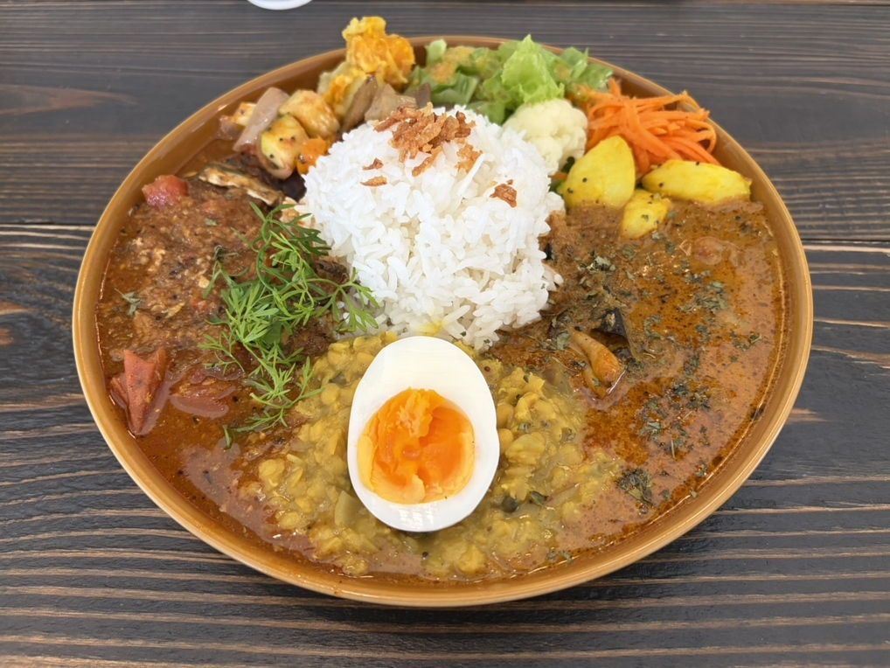
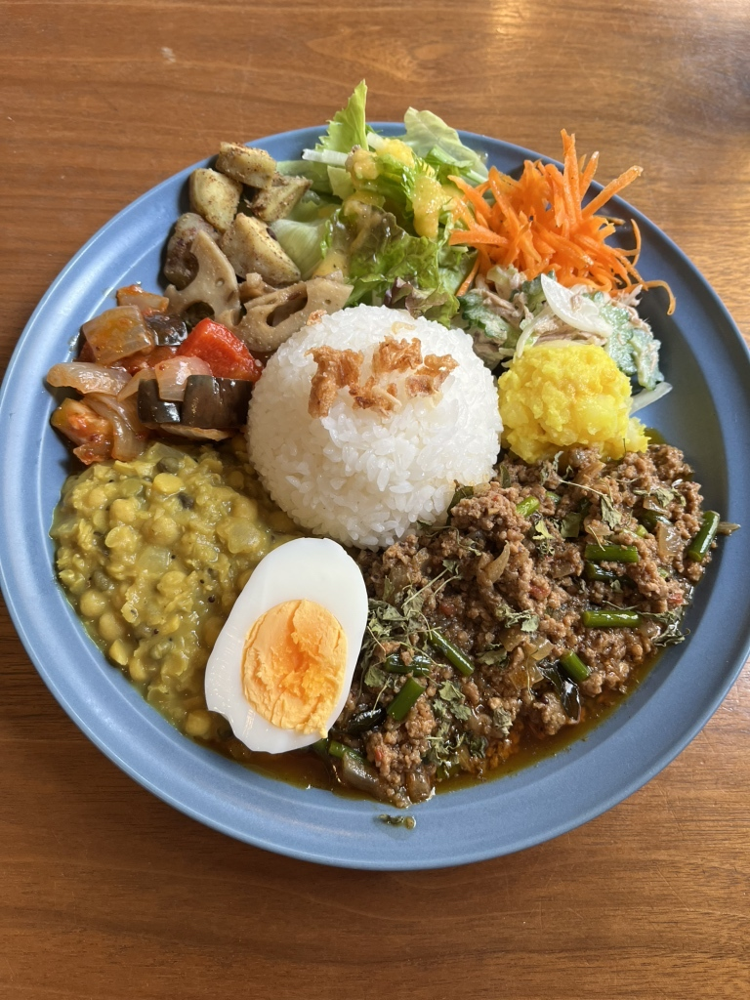
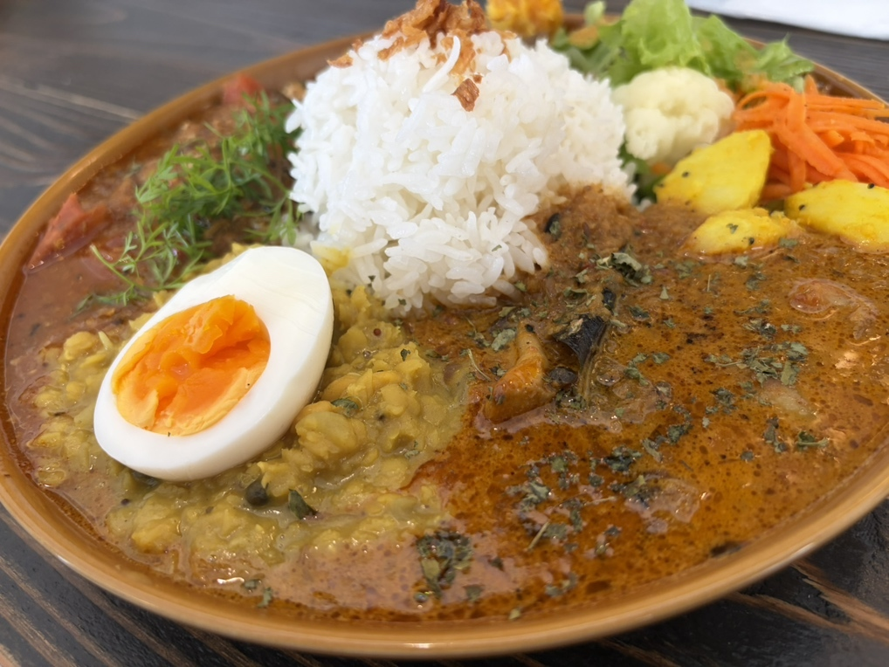
カレーのあとに、お茶やコーヒーはいかがでしょうか。入口近くには、米粉のおやつも置いております。
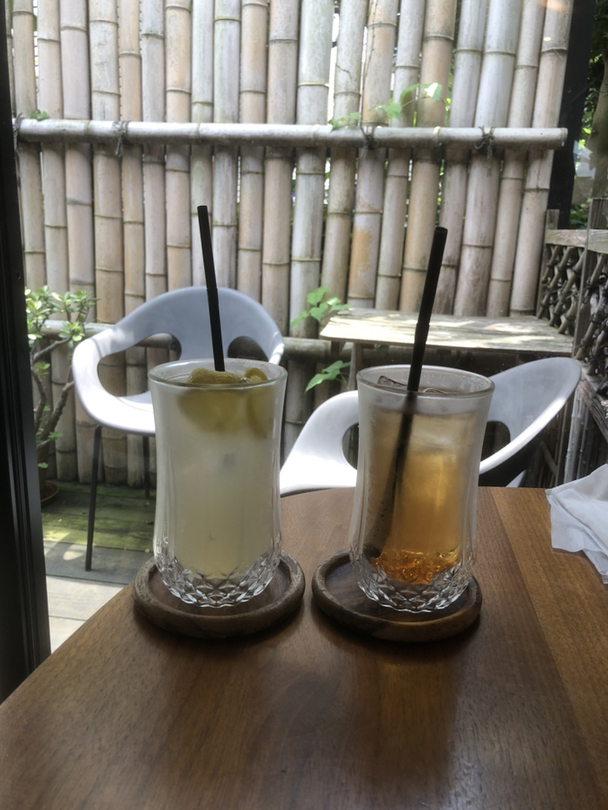
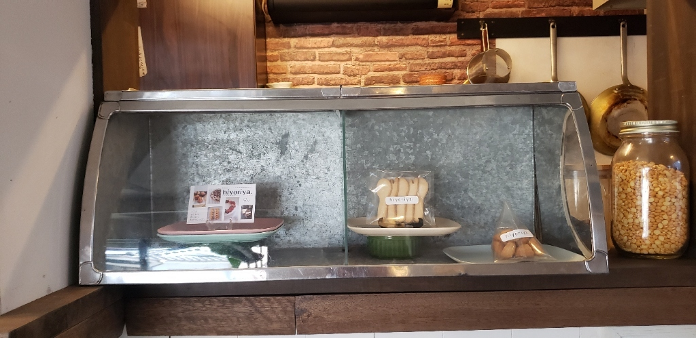
カウンター、ソファー席、テーブル席がございます。お一人でも、お連れの方とでも、ゆっくりどうぞ。
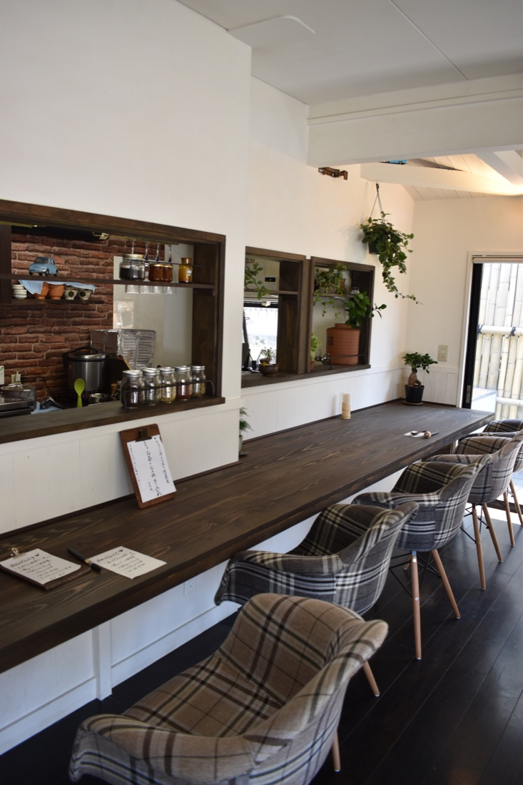
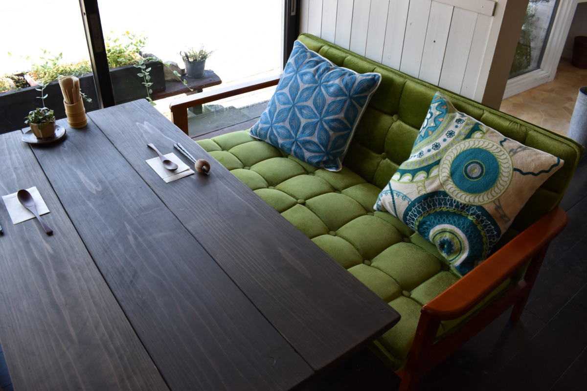
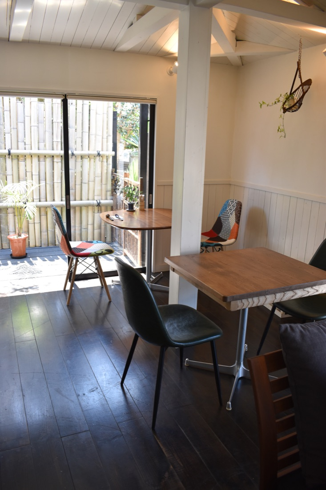
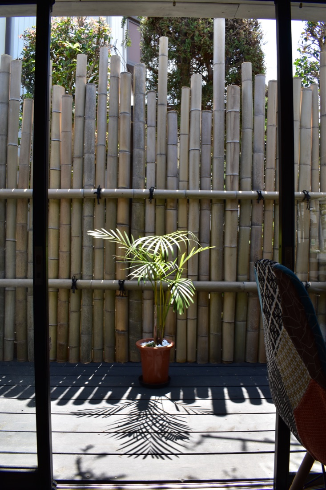
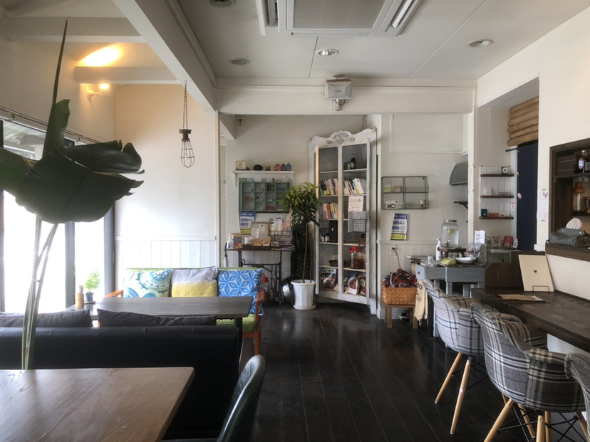
ご予約はお電話で承ります。
店主ひとりで作っておりますので、お持ち帰りは前日までにご予約のうえ、11:30にお引き取りいただける方にお願いしております。
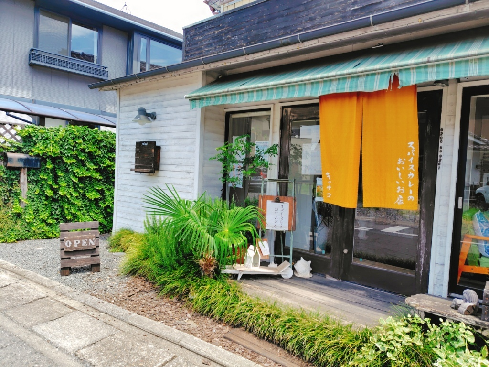
分からないことがございましたら、お気軽にお電話でお尋ねください。
| 住所 | 〒306-0005 茨城県古河市北町2-3 Googleマップで開く |
|---|---|
| 電話 | 0280-66-9261 |
| 営業時間 | 11:30〜15:30（L.O. 14:00） |
| 営業日 | 火・水・木・金曜日（土・日はお休み） 祝日は営業する日がございます。営業日は毎月インスタグラムでお知らせしております。 |
| 駐車場 | お店の向かいに駐車場がございます |
| お支払い | PayPay・楽天ペイ |
| アクセス | 古河駅東口から歩いて十数分 |
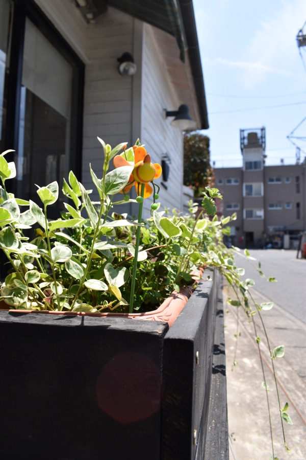